Gopher It: Office Intern Simulator
A cozy first-person job sim about being the newest intern. Nobody brings you work: when a coworker calls, you walk over, hear what they need, and go and do it. Play alone or with up to three friends.
- Free demo out now
- Out November 9, 2026
- Windows (Steam)
- 1 to 4 players
- $7.99
- 12 languages
Factsheet
- Developer and publisher
- Lys Games
- Release dates
- Free demo: out now (released October 27, 2026)
Full game: Monday, November 9, 2026, 10am Pacific - Platform
- Windows, on Steam
- Price
- $7.99 USD, 25% off in launch week
- Players
- 1 to 4. Online co-op with Steam friends and invites. Solo play is the same game, hosted for one.
- Languages
- Interface and text in English, French, German, Spanish (Spain), Italian, Polish, Portuguese (Brazil), Turkish, Russian, Japanese, Korean and Simplified Chinese. No voice acting.
- Engine
- Godot 4
- Steam features
- Achievements, full controller support, Family Sharing
- Accessibility
- No timed input, play at your own pace, camera comfort options, separate volume controls
- Links
-
- Steam store page
- Trailer on YouTube
- X: @lysgamedev
- Bluesky: @lysgames.bsky.social
- YouTube: @lysgamedev
- TikTok: @lysgamedev
Description
Short
Gopher It is a cozy first-person job sim about being the newest intern. When a coworker calls, you go and do what they want: copies, coffee, the post, a birthday card to pass round. Play solo or with up to three friends. No timers, no game over.
Long
You are the new intern, and you happen to be a gopher. Nobody brings you work. Someone waves from two desks over, or shouts from behind a door, and you walk over to find out what they need. Then you go and do it.
Marcel the fox needs four sets collated. Beatrice the alpaca wants a drink and will tell you exactly how she takes it. Pixel the shiba inu needs something moved that weighs more than Pixel does. The jobs are small and hands-on. At the copier you load the paper, set the count, clear the jam, staple the sets and carry them back. For a drink you put the cup in, press the right button, add the sugar they asked for, then cross the floor without spilling it.
The clock only moves when you finish a task, so you can never fall behind. If you do spill that coffee, you fetch the mop. Errands earn intern points, and the points unlock things: copier duty, a desk of your own, a drinks tray, a keycard to the archive on the eighth floor and, eventually, a promotion.
With friends it is the same office. The day's list grows with the group, every finished errand moves the clock on for everyone, and anything you can't finish can be left on the spare desk for someone else to pick up. Some jobs, like the heavy crate, only turn up when there are at least two of you.
The free demo covers your first three days on the job, in solo or co-op.
Features
- You go to the workA sign pops up over a coworker's head, or a voice calls from a side room. You go to them, hear the request in person, and fetch what they asked for.
- Over forty kinds of errandThe copier, the drink round, desk-to-desk post, a courier at the lobby door with a pallet nobody ordered, the shredder, and a birthday card everyone has to sign before its owner notices.
- No timers, no game overTime only passes when a task is done. Mistakes turn into small jobs, like mopping up a spill, or cost a few points on the end-of-day fax.
- 27 unlocksIntern points open new rooms, tools, kinds of errand, and coworkers who weren't asking you for anything before, all the way to the end of your internship.
- Co-op for up to fourFriends join through Steam. The errand list scales with the group, and the spare desk lets you hand off a job you can't finish.
- A whole office to meetNine coworkers hand out errands: Marcel, Beatrice and Pixel from day one, and six more as you go, plus Colette on reception and Gus the courier.
- Two floors to learnFloor seven holds the lobby, the bullpen, the print room, the break room, the meeting room, the stock room and more. The records archive upstairs needs a keycard, and the lift has its own music.
- Plays with a padFull controller support and 41 Steam achievements.
Trailer
Gopher It trailer, 32 seconds. Download the 1080p MP4, or watch and embed it from YouTube.
Screenshots
The six screenshots from the Steam page, 1920 × 1080. Click one to open it full size, then right-click (or long-press) to save.

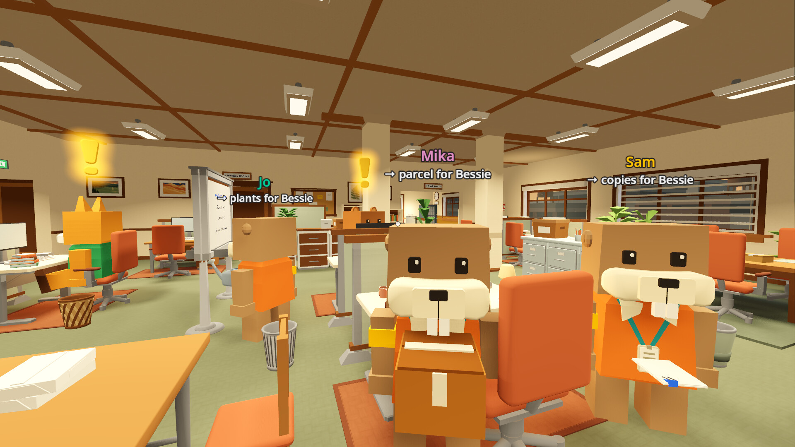

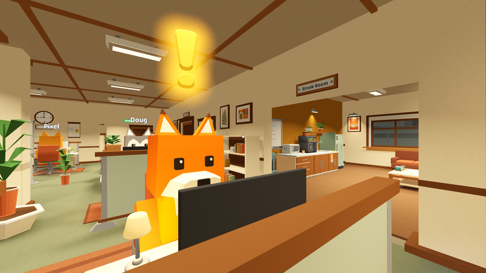

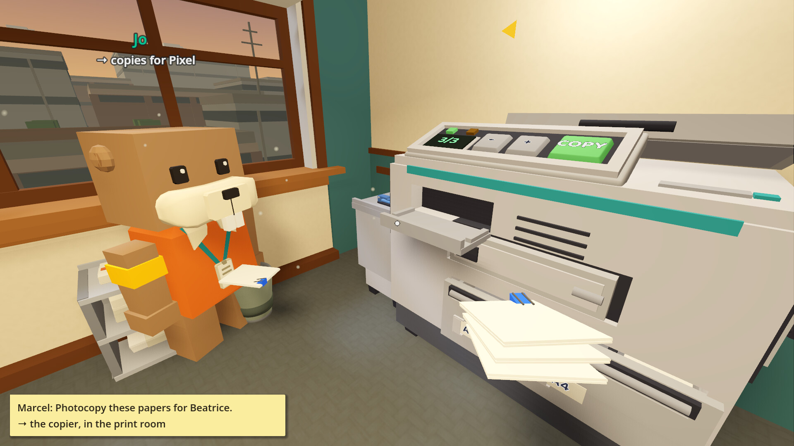

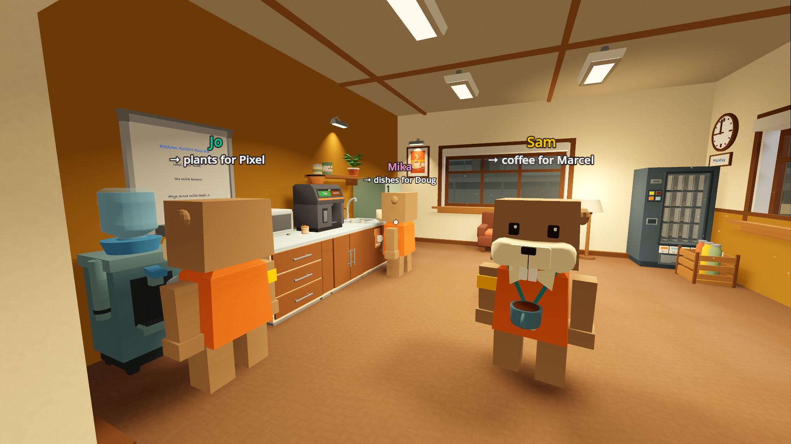

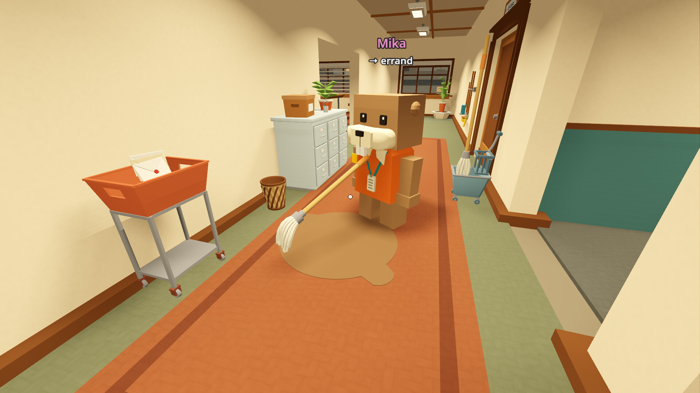

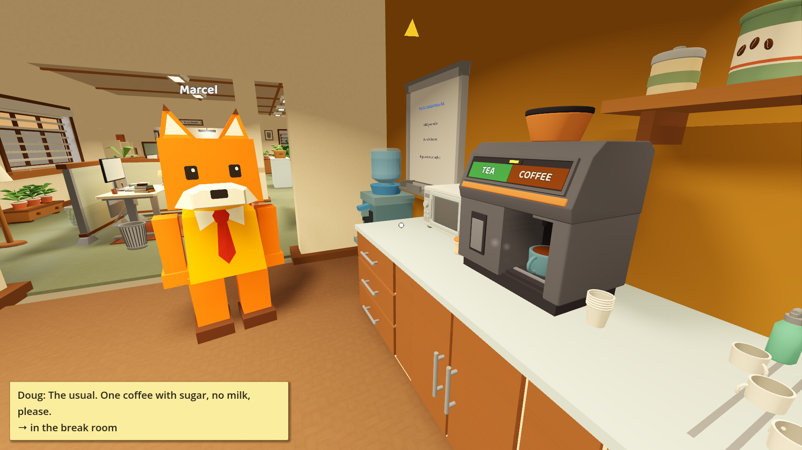
GIFs
Short loops, 640 px wide. Right-click (or long-press) to save.
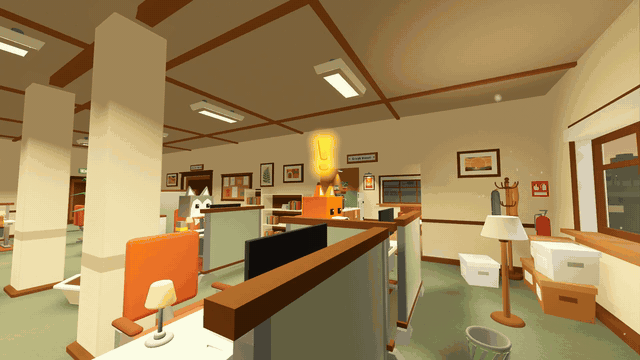
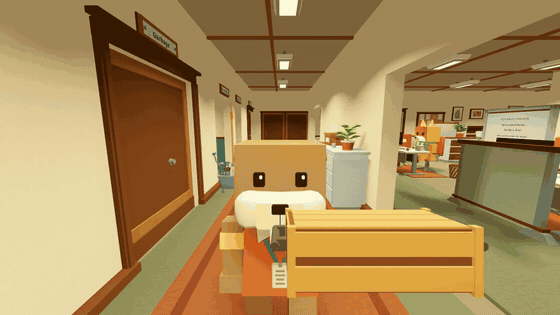
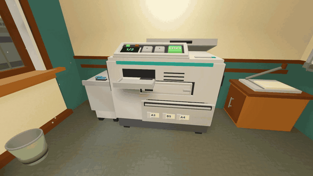
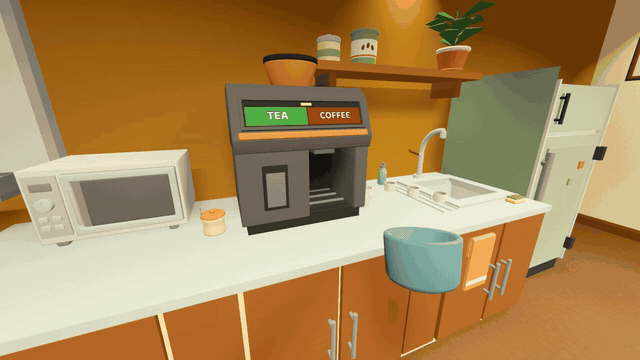
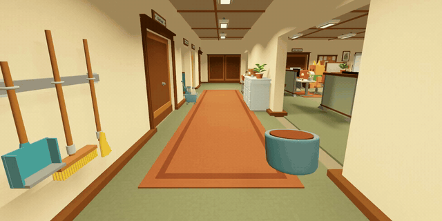
Logos and icon
Transparent PNGs at full resolution. The first has a walnut outline for light backgrounds, the second a cream outline for dark ones.

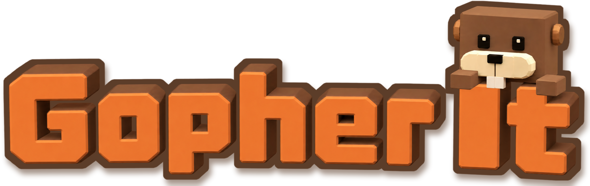

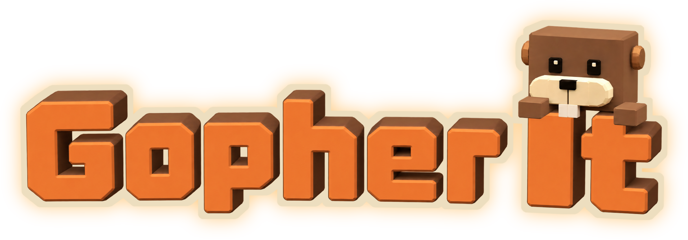

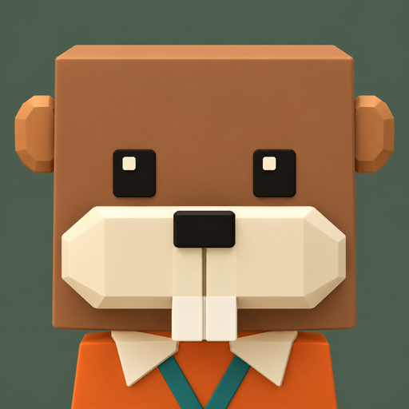
Art

Store capsules


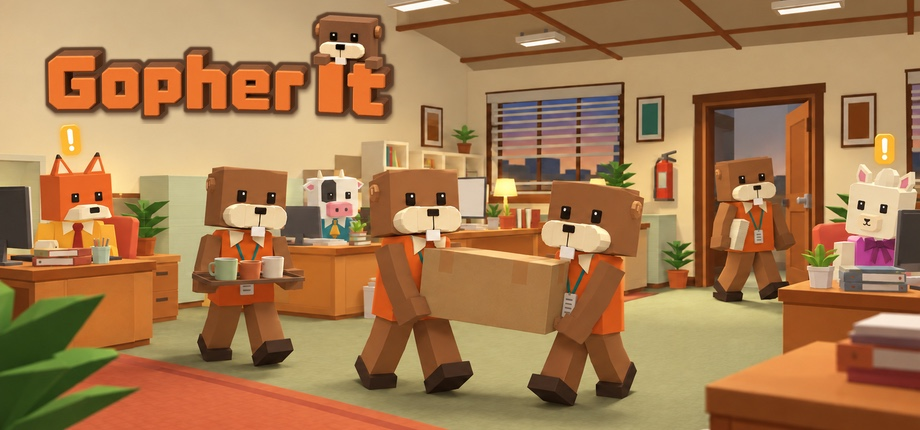

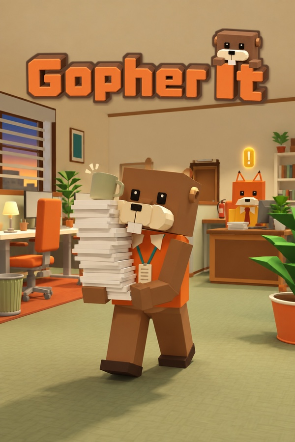
For streamers and video creators
You are welcome to stream Gopher It and to make videos of it, and you can monetize them. You don't need to ask first. A link to the Steam page in the description is appreciated but not required.
Keys are available on request. Email lysgamedev@gmail.com with a link to your channel. Keys are only sent to the email address listed on that channel, so please write from that address or make sure it is visible on your channel page.
The free demo is out now and covers your first three days on the job, so you can play the start without a key.
Use of AI
"Some of the art (store images, icons, in-game paintings and textures) and translations were created with the help of generative AI tools."
This is the disclosure on the Steam page. The game does not generate anything with AI while you play.
Contact
Press, creators and anything else: write to
lysgamedev@gmail.com